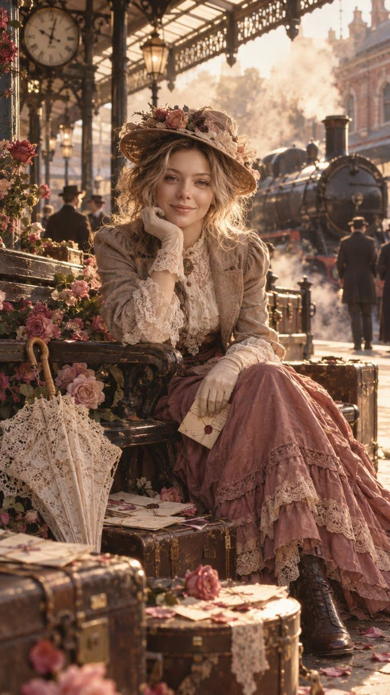

"Julia in 1890s" Victorian portrait
GRN-012Grain / Filterunspecifiedby Zidan 子丹 (@liluocheng13)2026-10-14

Cinematic late-1890s Victorian historical portrait with period photographic character.
Prompt
Ratio 9:16. Masterpiece, cinematic historical portrait photography, late 1890s Victorian Europe steam railway station, golden afternoon light, romantic old rose letters atmosphere, rich storytelling environment. A full-body seated environmental portrait of a young woman (use the uploaded image as reference) on a dark wooden Victorian railway bench, surrounded by roses, old letters, a lace parasol, vintage luggage, and a steam locomotive. Use the uploaded image as the only facial identity reference. Preserve the original face shape, proportions, natural age appearance, expression, and unique features. No AI face, no beautification, no facial alteration. Shot on a Leica M6 35mm film camera with Leica Summilux 50mm lens, Kodak Portra 400 film emulation, authentic analogue photography, organic film grain, soft highlight roll-off, subtle halation, natural skin texture, gentle contrast, timeless documentary feeling. Late Victorian travel dress: cream lace blouse, oatmeal fitted jacket, dusty rose Victorian skirt, dark brown leather ankle boots, ivory gloves, antique jewellery, delicate travel hat. Composition: 50–65mm natural perspective, subtle low angle, three-layer depth: foreground roses and parasol, middle ground woman and personal objects, background steam locomotive, brick station, gas lamps, station clock, rose vines. Warm golden sunlight through steam and canopy, soft rim light on hair and fabric, realistic materials, natural shadows. The final image should feel like a forgotten Victorian photograph discovered inside an old family album. Negative prompt: AI face, plastic skin, CGI look, digital sharpness, modern objects, wrong historical period, distorted anatomy, extra fingers, bad hands, fake steam, oversaturated colours, watermark, text.
Tags: period photo, 1890s, historical